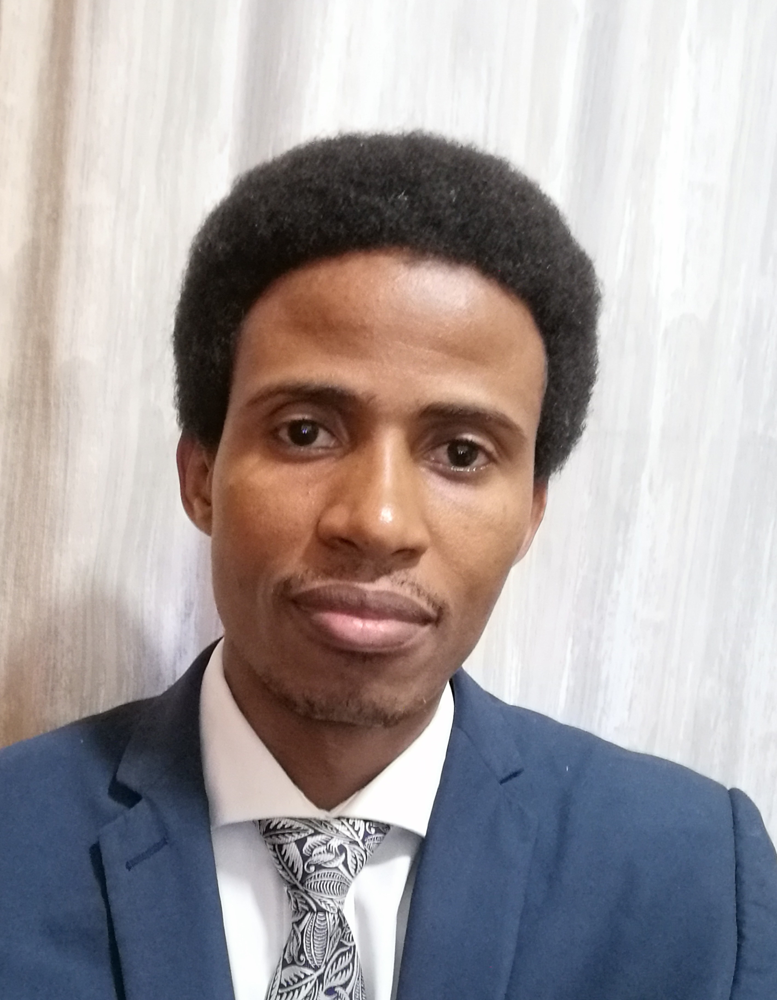

Hi, my name is Basil Khuzwayo I'm from Durban South Africa, I am a returned missionry I served my mission in Kenya and Tanzania back in 2007-2009,I'm a husband and father of two boys and one girl, this year I will be celebrating my 10th year wedding anniversary.
I am a convert in the church of Jesus Christ of Latter day saints I joined the church in the year 2000. Previosly I was working in the motor industry as a technician and currently I work part time while I'm studying Software Development with BYU Idaho. Apart from spending time with my family, in my spare time I enjoy reading personal development(self help) books and playing soccer with friends.
"For members of the church education is not merely a good idea, it is a commandment" I was inspired by Elder Uchtdorf's qoute. I then decided to pursue formal education.
Having always had a love for design and seeing that the world was advincing in technology; I decided to stretch myself and pursue a career in the technology industry. I hope to become a backend developer among many other roles.I am so glad to be with all of you in this class and looking forward to learn and grow together.